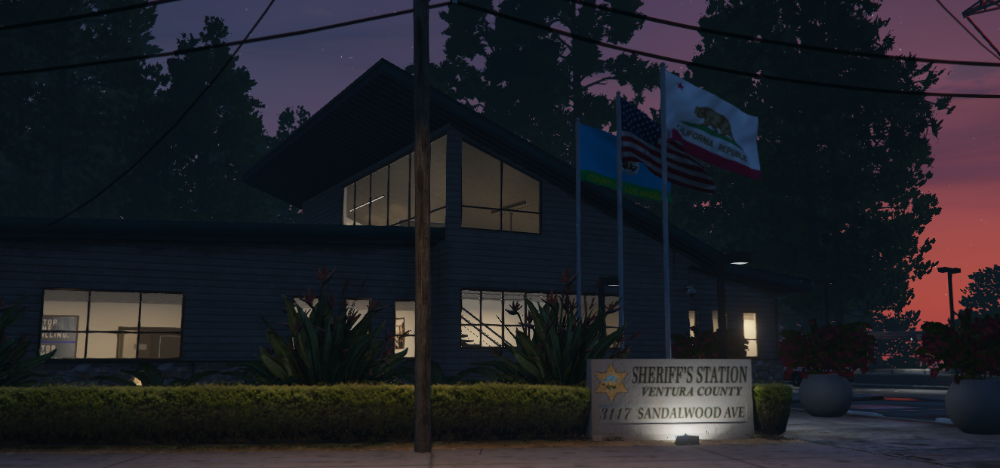

Ojai
The Ojai Station is part of the Ventura County Sheriff's Office, which provides law enforcement services to unincorporated areas of Ventura County and some incorporated cities by contract.
Their mission is to ensure public safety, enforce the law, prevent crime, and enhance the quality of life in the communities they serve.
The Ojai Station is staffed by deputies, detectives, and administrative personnel who work collaboratively to respond to local needs and maintain a visible, approachable presence within the community.
Fillmore

The Ventura County Sheriff's Office Fillmore Station provides law enforcement services to the city of Fillmore and surrounding areas, including the small communities in the Santa Clara River Valley.
Fillmore is a rural and agricultural community with a rich history, surrounded by orchards and scenic landscapes, and known for its welcoming, small-town atmosphere.
The Fillmore Station plays a crucial role in ensuring the safety, security, and well-being of residents while supporting community values.
Thousand Oaks
The Ventura County Sheriff's Office Thousand Oaks Station serves the city of Thousand Oaks, one of the largest cities in Ventura County, known for its family-friendly environment, low crime rate, and proximity to the Los Angeles metropolitan area.
The Thousand Oaks Station provides comprehensive law enforcement services to the community, aiming to foster safety, trust, and collaboration among residents.
Thousand Oaks is located near hilly and forested areas that are susceptible to wildfires. The Thousand Oaks Station works closely with Ventura County Fire Department and emergency management agencies to educate residents on wildfire preparedness, organize evacuation routes, and respond to natural disasters when needed.
The station is also actively involved in community drills and public safety education to keep residents informed and prepared.